做法（方案 C）：不用 AI 视频，全部后期合成——NovelAI 关键帧（灰烬法师施法）+ 游戏自己的敌人立绘（普通怪 / 精英 / 守关者原立绘）合成进画面，
按场景调色、加法术颜色的轮廓光；推镜、视差、粒子、命中白闪、冲击环、震屏、击退、冰冻、余烬溶解；字幕后期加；音乐是游戏 boss 战 BGM，音效和法术语音都是游戏原声。
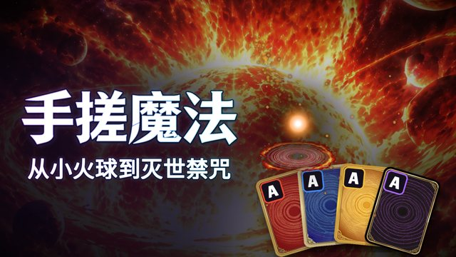
00.00 – 01.85 s
封面 / 第 0 帧（沿用 v2 封面）：焚天关键帧 + 字标 + 四色元素卡 + 小火球
敌人：—
字幕：（封面字标）
cover.py
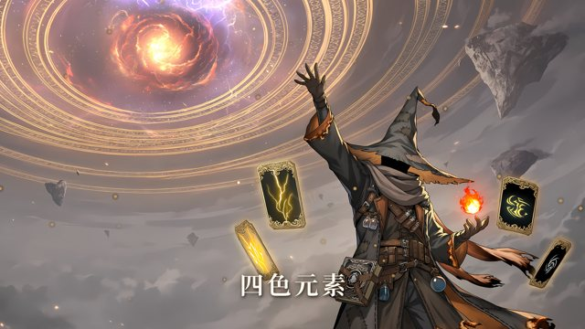
01.85 – 03.69 s
四色元素卡环绕灰烬法师，四张牌依次亮起
敌人：—
字幕：四色元素
11-07 主视觉 kv_wide_sr.png
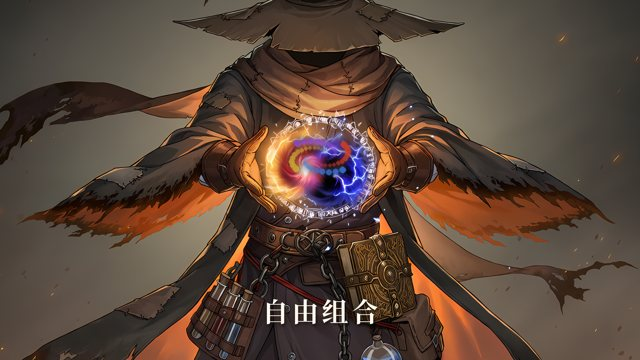
03.69 – 05.54 s
双手之间四色元素旋转汇合 → 白闪
敌人：—
字幕：自由组合
NovelAI 关键帧 k2_hands（Real-ESRGAN ×1.5）
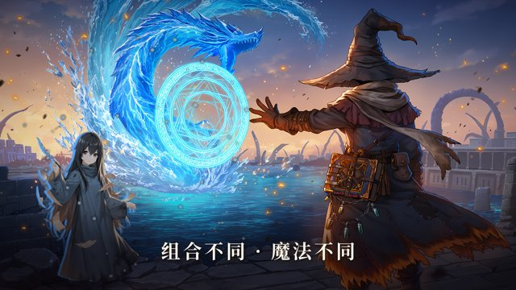
05.54 – 07.38 s
水龙冲向左侧敌人：蓝色命中闪、冲击环、水花，敌人被击退
敌人：普通怪 n2 浮游抄写员
字幕：组合不同 · 魔法不同
NovelAI k3_water + assets/image/foe2/n2.png
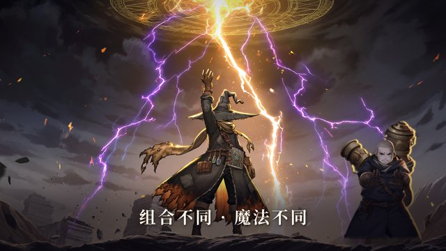
07.38 – 09.23 s
落雷：金 / 紫两道闪电劈中右侧敌人，白闪 + 震屏 + 击退
敌人：普通怪 n6
字幕：组合不同 · 魔法不同
NovelAI k4_thunder + foe2/n6.png
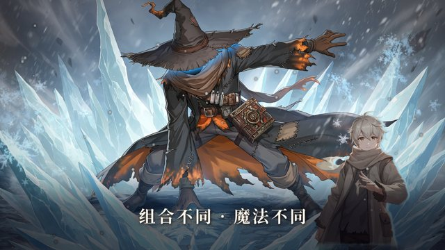
09.23 – 11.08 s
冰：右侧敌人被冻住，染成冰蓝，冰晶从脚下长上来
敌人：普通怪 n4
字幕：组合不同 · 魔法不同
NovelAI k5_ice + foe2/n4.png
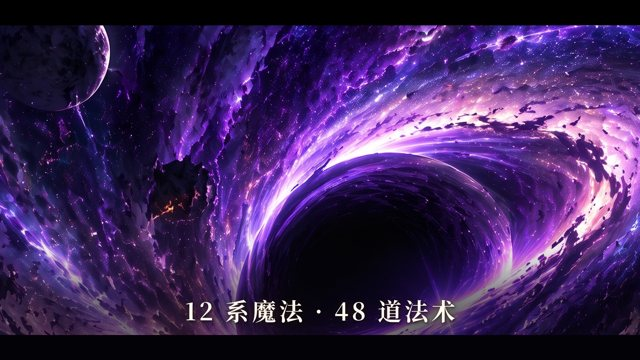
11.08 – 12.00 s
禁咒快剪：万物归暗
敌人：—
字幕：12 系魔法 · 48 道法术
art-source/1106/ult/dark_hd.jpg
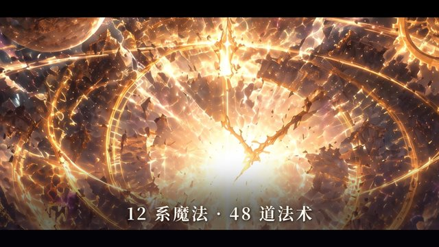
12.00 – 12.92 s
禁咒快剪：时间终结
敌人：—
字幕：12 系魔法 · 48 道法术
art-source/1106/ult/time_hd.jpg
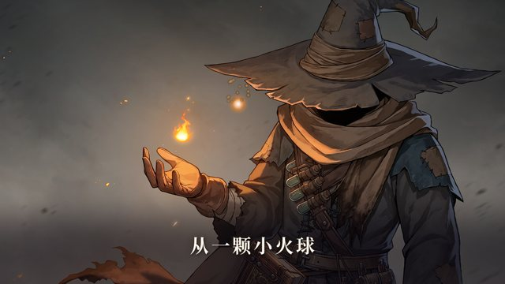
12.92 – 14.31 s
掌心一颗小火球（特写）
敌人：—
字幕：从一颗小火球
NovelAI k6_ember
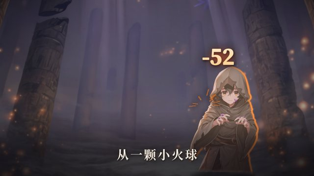
14.31 – 15.69 s
小火球飞过去，只把敌人推了一下：−52
敌人：普通怪 n1 魔蚀学徒
字幕：从一颗小火球 / −52
关卡背景 stage/s1.jpg（魔蚀荒原）+ foe2/n1.png
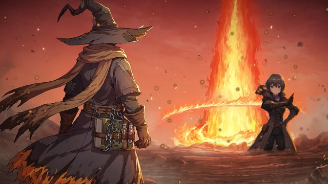
15.69 – 17.54 s
爆炎：火柱炸开，精英被掀飞并烧散（余烬溶解）
敌人：精英 e1
字幕：—
NovelAI k7_inferno + foe2/e1.png
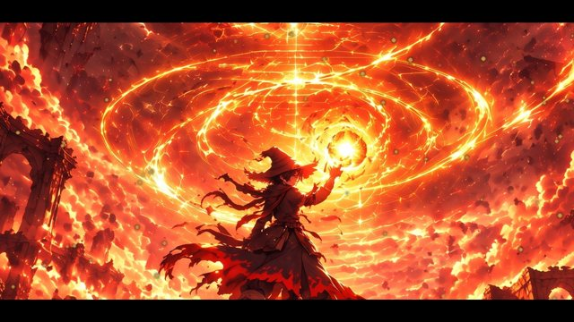
17.54 – 19.38 s
禁咒 · 焚天：法师举起太阳
敌人：—
字幕：—
art-source/1106/ult/fire_hd.jpg
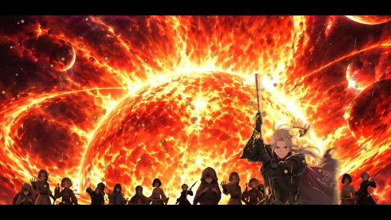
19.38 – 23.08 s
焚天：镜头从太阳下摇到平原，守关者和一整支军队被白光吞没、烧散，−205.8 万
敌人：守关者 雷恩（原立绘）+ 16 个普通 / 精英怪剪影
字幕：到灭世禁咒 / −205.8万
fire_hd.jpg + boss/b6_rain.png + foe2 n1/n2/n3/n5/n6/n7/e3/e6
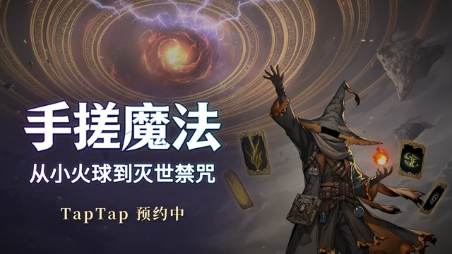
23.08 – 26.85 s
片尾：主视觉 + 字标 + TapTap 预约中
敌人：—
字幕：手搓魔法 从小火球到灭世禁咒 / TapTap 预约中
kv_wide_sr.png + store/1107/logo.png
脚本：devtools/store/1108/cg_trailer.py（合成）、cg_review_page.py（本页）、cg_nai_jobs.json（NovelAI 关键帧任务）。